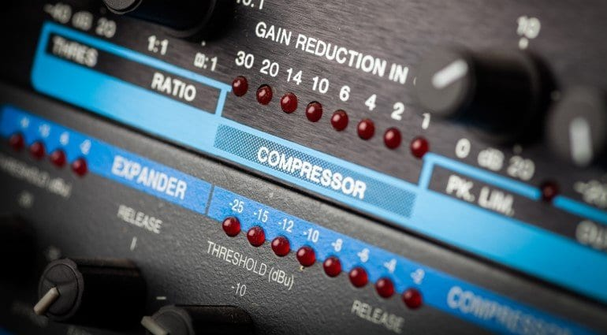
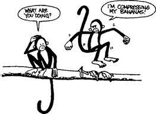

Beeldopslag
Beeldopslag bij compressietechnieken is een belangrijk onderdeel van digitale beeldverwerking en datamanagement. Het doel van beeldcompressie is om de hoeveelheid gegevens die nodig is om een afbeelding op te slaan en over te dragen te verminderen, zonder significant verlies van kwaliteit. Er zijn verschillende compressietechnieken die worden gebruikt, elk met zijn eigen aanpak en toepassingen.
Lossless compressie: Dit type compressie behoudt alle originele gegevens en resulteert in nul verlies in beeldkwaliteit. Het wordt vaak gebruikt voor medische beelden, technische tekeningen en tekstbestanden, waar elk detail cruciaal is. Populaire formaten zijn PNG en GIF.
Lossy compressie: Lossy compressie vermindert de bestandsgrootte door irrelevante informatie te verwijderen en enige kwaliteit te verliezen. Het wordt veel gebruikt voor fotografie en algemene beelden. JPEG is een veelgebruikt voorbeeld van een lossy compressieformaat.
Vectorcompressie: Dit type compressie is gebaseerd op wiskundige vectoren en wordt vaak gebruikt voor grafische afbeeldingen met eenvoudige geometrische vormen, zoals logo's en illustraties. SVG is een bekend voorbeeld van een vectorformaat.
Wavelet-compressie: Wavelet-compressie is geschikt voor beelden met zowel lage als hoge frequentiepatronen en wordt gebruikt in medische beeldverwerking en satellietbeelden. JPEG 2000 maakt gebruik van wavelet-compressie.
Beeldopslag bij compressietechnieken is cruciaal voor efficiënt datamanagement, opslagruimtebesparing en snelle gegevensoverdracht via internet. Het juiste compressieformaat wordt gekozen op basis van de aard van de afbeelding en de gewenste balans tussen bestandsgrootte en kwaliteit. Het begrip van verschillende compressietechnieken is essentieel voor grafische ontwerpers, fotografen en iedereen die met digitale afbeeldingen werkt.

Geluidopslag
Geluidopslag met behulp van compressietechnieken is een cruciaal aspect van digitale audiotechnologie, waardoor audio-informatie efficiënt kan worden opgeslagen en overgedragen zonder aanzienlijk kwaliteitsverlies. Deze technieken zijn van essentieel belang in verschillende toepassingen, waaronder muziekstreaming, spraakcommunicatie, en audiobestanden opslaan. Er zijn twee belangrijke soorten audiocompressie:
Lossless compressie: Bij lossless compressie wordt de audiokwaliteit behouden, omdat er geen gegevens verloren gaan tijdens het compressieproces. Het verwijdert alleen redundante informatie, zoals stilte of herhalende patronen. Populaire formaten zijn FLAC en ALAC. Lossless-compressie wordt vaak gebruikt in muziekproductie en archivering, waar kwaliteit cruciaal is.
Lossy compressie: Lossy compressie vermindert de bestandsgrootte door irrelevante informatie te verwijderen, wat leidt tot enig kwaliteitsverlies. Het wordt veel gebruikt in audio-streamingdiensten en op draagbare apparaten zoals mp3-spelers. Het bekendste lossy formaat is MP3, maar er zijn ook anderen zoals AAC en Ogg Vorbis.
Bij audiocompressie is de keuze tussen lossless en lossy afhankelijk van de toepassing en de vereisten voor geluidskwaliteit. Voor kritieke toepassingen waar geen kwaliteitsverlies wordt getolereerd, zoals in de muziekindustrie, wordt lossless compressie gebruikt. Voor streaming, opslag van grote muziekcollecties en draagbare apparaten is lossy compressie populair vanwege de kleinere bestandsgrootte.
Het begrip van verschillende audiocompressietechnieken is essentieel voor professionals in de muziek- en audiobranche en draagt bij aan de efficiënte opslag en overdracht van audiogegevens in de digitale wereld.
Tekstcompressie
Tekstcompressie is een proces waarbij tekstuele gegevens worden omgezet in een compactere vorm met als doel opslagruimte te besparen en gegevens efficiënter over te dragen. Dit is van cruciaal belang in tal van toepassingen, waaronder tekstverwerking, gegevensopslag en gegevensoverdracht via het internet. Er zijn twee hoofdtypen tekstcompressie:
Lossless compressie: Bij lossless compressie wordt de oorspronkelijke tekst nauwkeurig gereproduceerd bij het decoderen, zonder verlies van informatie. Dit type compressie is geschikt voor tekst waarvan behoud van elk detail cruciaal is, zoals juridische documenten, archieven, en gecomprimeerde bestandsindelingen zoals ZIP en RAR.
Lossy compressie: Bij lossy compressie wordt enige informatie opzettelijk geëlimineerd om de bestandsgrootte te verminderen. Dit gaat meestal gepaard met kwaliteitsverlies, en het wordt vaak gebruikt in toepassingen zoals beeldschermtekst, internettekst en e-mails.
Tekstcompressie maakt gebruik van verschillende technieken, zoals Huffman-codering, run-length encoding, en dictionary-based compressie. Bijvoorbeeld, in Huffman-codering worden vaak voorkomende tekens of woorden vervangen door kortere codes, terwijl minder voorkomende tekens of woorden worden vertegenwoordigd door langere codes.
Het begrip van tekstcompressie is belangrijk om effectief gebruik te maken van digitale bronnen, zoals het minimaliseren van de opslagruimte op harde schijven en het versnellen van de gegevensoverdracht. Het heeft brede toepassingen in tekstverwerking, databasebeheer en informatieopslag.
